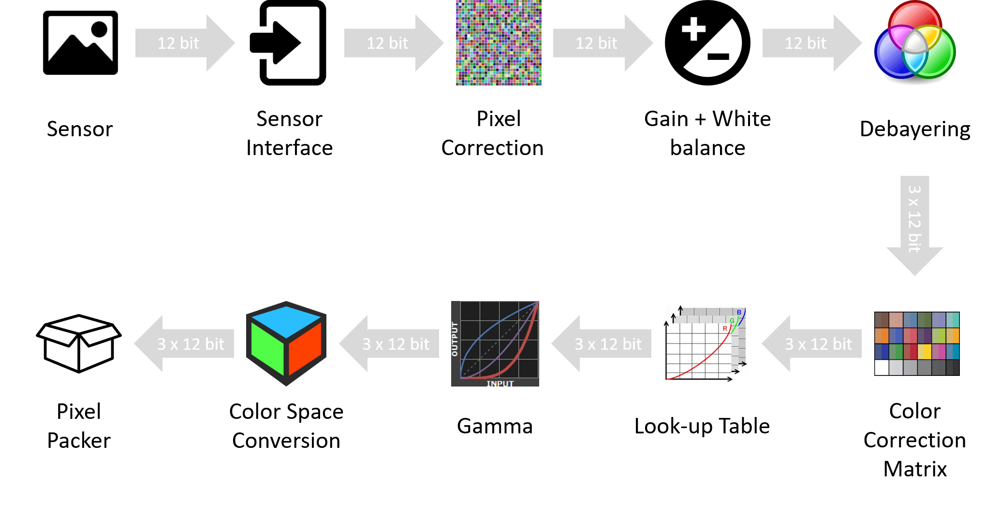
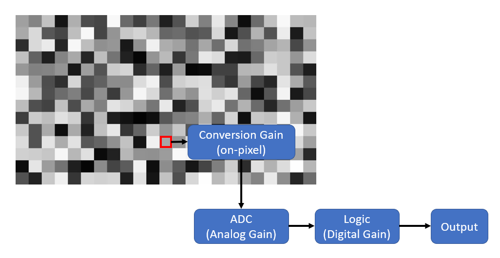
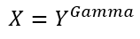
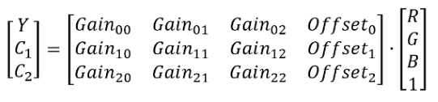
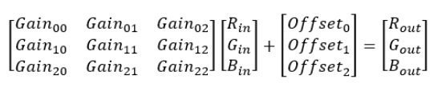

Image Processing Controls¶
The TRI054S camera is equipped with the following image processing control flow.
{kind=link}
The details of each of the image processing controls are described below.
Defect Pixel Correction¶
The TRI054S supports a list of pixel coordinates to be corrected via firmware. For the list of pixel coordinates, their actual pixel values are replaced by interpolation of their neighboring pixel values. The camera has a preloaded pixel correction list and these pixels are loaded during the camera manufacturing process. It is natural that sensors come with defective pixels and they are inevitable in the semi-conductor manufacturing process. As the camera operates longer in heat or is exposed to radiation, more defective pixels may appear. Users can update the pixel correction list any time.
Steps to add a new pixel to the correction list
- Set OffsetX and OffsetY to zero. Set Width and Height to the maximum allowed value.
- Set Gain to zero and note the coordinates of any bright pixels in the image. Please ensure the camera is not exposed to light by covering it with a lens cap and placed in a dark box.
- Fire the DefectCorrectionGetNewDefect command.
- Enter the X-coordinate noted in step 2 into DefectCorrectionPositionX.
- Enter the Y-coordinate noted in step 2 into DefectCorrectionPositionY.
- Fire the DefectCorrectionApply command.
- Repeat steps 3-6 as needed and fire the DefectCorrectionSave when done.
| Pixel correction is still applied if the image geometry changes (e.g. applying ReverseX, ReverseY, a region of interest, or binning). | |
The following pseudocode demonstrates adding a defective pixel to the correction list:
1 2 3 4 5 6 7 8 9 10 11 12 13 14 15 16 | // Connect to camera
// Get device node map
// Set maximum width and height
OffsetX = 0;
OffsetY = 0;
Width = Max Width;
Height = Max Height;
// Set constant ExposureTime and Gain
DefectCorrectionGetNewDefect();
DefectCorrectionPositionX = 25; // The X-coordinate of the blemish pixel
DefectCorrectionPositionY = 150; // The Y-coordinate of the blemish pixel
DefectCorrectionApply();
// Repeat the above four steps as needed. When complete:
DefectCorrectionSave();
|
Gain¶
Gain refers to a multiplication factor applied to a signal to increase the strength of that signal. On Lucid cameras, gain can be either manually adjusted or automatically controlled.
Some cameras feature gain that is purely digital while others allow for analog gain control up to a certain value, beyond which the gain becomes digital. Depending on the camera family and sensor model, the specific gain control can vary.
Analog Gain¶
Analog Gain refers to amplification of the sensor signal prior to A/D conversion.
Digital Gain¶
Digital Gain refers to amplification of the signal after digitization.
| Model | Conversion Gain | Analog | Digital |
|---|---|---|---|
| TRI004S | NA | 0-24dB | 24-48dB |
| TRI016S | NA | 0-24dB | 24-48dB |
| TRI023S | NA | 0-24dB | 24-48dB |
| TRI028S | HCG 7.2dB | 0-24dB | 24-48dB |
| TRI032S | NA | 0-24dB | 24-48dB |
| TRI050S | NA | 0-24dB | 24-48dB |
| TRI050S-(P/Q) | NA | 0-24dB | 24-48dB |
| TRI064S | NA | 0-24dB | 24-48dB |
| TRI071S | HCG 7.2dB | 0-24dB | 24-48dB |
| TRI089S | NA | 0-24dB | 24-48dB |
| TRI120S | NA | 0-24dB | 24-48dB |
| TRI122S | NA | 0-27dB | NA |
| TRI200S | NA | 0-27dB | NA |
| TRI02KA | HCG 12dB | NA | 0-24dB |
The following pseudocode demonstrates setting Gain to 12 dB:
1 2 3 4 | // Connect to camera
// Get device node map
GainAuto = Off;
Gain = 12;
|
Conversion Gain Switching¶
Sony’s third generation Pregius sensor line offers a new feature called Conversion Gain Switching. This feature is implemented in IMX428 (TRI071S) and IMX429 (TRI028S) offered in the Triton family. The conversion gain switching feature allow users to select between High Conversion Gain (HCG) for maximum sensitivity and minimum read noise in low light, and Low Conversion Gain (LCG) for greatly increased saturation capacity and higher dynamic range under bright light.
{kind=link}
The 2K Line Scan Awaiba sensor also supports conversion gain on sensor before the ADC stage.
| Conversion gain (HCG or LCG) only allows the pixel to be applied once, you will not get the same pixel with both HCG and LCG in two images. | |
Color Processing¶
The TRI054S camera is equipped with a debayering core within the image processing pipeline. The color processing core enables the camera to output a color processed image format in addition to the unprocessed Bayer-tiled image. Currently the camera supports the RGB8 pixel format which outputs 8-bits of data per color channel for a total of 24-bits per pixel. Due to the number of bits per pixel, the total image size for RGB8 would be 3 times larger when compared to an 8-bit image. This increase in image data size per frame would result in a reduction of average frame rate for the camera.
The following pseudocode demonstrates configuring the camera to RGB8 pixel format:
1 2 3 | // Connect to camera
// Get device node map
PixelFormat = PixelFormat_RGB8;
|
White Balance¶
The white balance module aims to change the balance between the Red, Green and Blue channels such that a white object appears white in the acquired images. Lucid Vision Labs cameras allow for manual white balance adjustment by the user, or automatic white balance adjustment based on statistics of previously acquired frames. Different external illuminations and different sensors may render acquired images with color shift. The White Balance module allows the user to correct for the color shift by adjusting gain value of each color channel.
Lucid Vision Labs offers two types of white balance algorithm as described below. Both methods below allow for user controlled anchor points or reference points, from which multipliers are computed for each channel. The different anchor points are summarized below.
| Anchors | Information |
|---|---|
| Min | The lowest luminance channel is used as reference while other channels are adjusted to match it. There is no chance of overflowing the pixels, however the image is darkened. |
| Max | The highest luminance channel is used as reference while other channels are adjusted to match it. There is a chance of overflowing the pixels. |
| Mean | The mean value of all channels is used as reference while all channels are adjusted to match the mean. There is a smaller chance of overflowing. |
| Green | Green channel is used as the reference while the Red and Blue are adjusted. |
Grey World
A grey world assumes that the average of all colors in an image is a neutral grey.
White Patch
White patch has the same idea as Grey World, but only considering a section of the image (i.e. the section being the white patches). A simple way to determine such section(s) of the image is to indicate a pixel as white when R+G+B is greater than the threshold pixel value. Determining the threshold can be done using a 90% percentile of previous image. There is also a need for an additional threshold to exclude saturated pixels for better white balance adjustment.
Look-Up Table (LUT)¶
Look-Up Table also known as LUT is used for mapping 12-bit user-specified pixel values to replace 12-bit raw sensor pixel values. Users input values for the even indices including the last index 4095 while averaging is used to calculate rest of the odd indices. So there are in total 2049 effective input entries; 2048 even (e.g., 0, 2, 4, ..., 4092, 4094) + 1 odd (4095). Index value 0 correspond to black color while the index value 4095 correspond to white color.
To build a LUT, users input index values (e.g., 0, 2, 4, ..., 4092, 4094, 4095) that need to be replaced in the LUTIndex field and the corresponding new value in the LUTValue field. For the odd index values in the gap (e.g., 1,3,5 …,4089, 4091, 4093), their mapped value is calculated by taking the average of their neighbor mapped values (e.g., If the input mappings are LUTIndex = 1090 -> LUTValue = 10 and LUTIndex = 1092 -> LUTValue = 20, then the mapped value of LUTIndex = 1091 will be LUTValue = 15)
| To reset Look-Up Table, please execute LUTReset command |
The following pseudocode demonstrates replacing black pixel values with white pixel values:
1 2 3 4 5 6 7 | // Connect to camera
// Get device node map
LUTEnable = true;
LUTIndex = 0; //Pixel value to be replaced, in this case black
LUTValue = 4095; //New pixel value, in this case white
LUTSave();
|
Gamma¶
The gamma control allows the optimization of brightness for display. LUCID implements Gamma using GenICam standard, that is
where,
- X = New pixel value; 0 <= X <=1
- Y = Old pixel value; 0 <= Y <=1
- Gamma = Pixel intensity: 0.2 <= Gamma <= 2
Y in the Gamma formula is scaled down to [0-1] from original pixel range which results in a pixel range of [0-1] for X. As an example, for 12-bit pixel formats, this would mean scaling down pixel range from [0-4095] to [0-1] and for 16-bit pixel formats, this would mean scaling down pixel range from [0-65535] to [0-1].
The camera applies gamma correction values to the intensity of each pixel. In general, gamma values can be summarized as follows:
- Gamma = 1: brightness is unchanged.
- 1 <= Gamma <= 2: brightness decreases.
- 0.2 <= Gamma <= 1: brightness increases.
Color Space Conversion and Correction¶
The Color Space Conversion control allows the user to convert from RGB color space to another color space such as YUV. The conversion is done in a linear manner as shown in the following equation.
The color correction function allows the user to choose between a few preset values or user-configurable matrix values. The color correction is done by allowing the multiplication of a 3x3 matrix to the 3x1 matrix containing R, G and B pixel values to achieve a more desirable R’, G’ and B’ values. The specific mathematical procedure can be represented by the following.
- ColorTransformationEnable is a node that indicates whether the conversion matrix of the color space conversion module is used or bypassed.
- When the pixel format is YUV or YCbCr, ColorTransformationSelector is displayed as RGBtoYUV. When the pixel format is Mono, ColorTransformationSelector is displayed as RGBtoY.
- ColorTransformationValueSelector chooses which coefficient in the conversion matrix and the coefficient value is shown in ColorTransformationValue. In Mono, YUV or YCbCr pixel formats, ColorTransformationValue is read only.